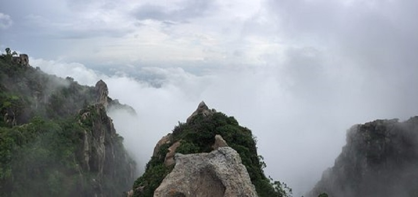

The Kota Bridge or Kota Chambal or Kota Cable Bridge is a cable bridge in Kota, Rajasthan. The bridge was inaugurated by Prime Minister of India Narendra Modi on 29 August 2017. The bridge is situated on the Kota Bypass. It crosses the Chambal River just outside the Kota city.
Tripper
Make Your Travel Easy
News

+
Mount Abu (About this sound pronunciation (help·info)) is a popular hill station in the Aravalli Range in Sirohi district of Rajasthan state in western India, near the border with Gujarat. The mountain forms a distinct rocky plateau 22 km long by 9 km wide. The highest peak on the mountain is Guru Shikhar at 1,722 m (5,650 ft) above sea level. It is referred to as 'an oasis in the desert' as its heights are home to rivers, lakes, waterfalls and evergreen forests. The nearest train station is Abu Road railway station: 28 km Away.